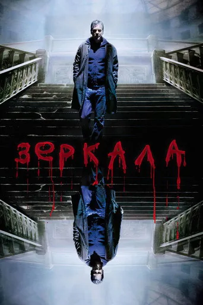

Зеркала 2008
Бен Карсон знавал времена и получше. Уже прошел почти год с тех пор как неуравновешенного детектива отстранили от работы в Полицейском управлении г. Нью-Йорка за убийство другого сотрудника спецслужбы, несчастный случай, который не только стоил ему работы, но и пробудил в нем тягу к алкоголю и агрессивность, из-за чего жена и дети отдалились от него, а сам он нашел пристанище на диване в квартире своей сестры в Куинс. Потеряв надежду вернуться к нормальной жизни и воссоединиться с семьей, Карсон нанимается на работу ночным сторожем выгоревших руин универмага “Mayflower”. То, что когда-то было символом процветания и роскоши, теперь медленно разрушается в темноте, как загнивающий корабль-призрак, разоренный гигантским пожаром, поглотившим множество невинных жизней. Когда Карсон обходит дозором свои владения, обугленные развалины универмага, он начинает замечать что-то зловещее в декоративных зеркалах, украшающих стены “Mayflower”.
Открыть в каталогеДанные и постеры принадлежат их правообладателям. Этот продукт использует TMDB API, но не одобрен и не сертифицирован TMDB.